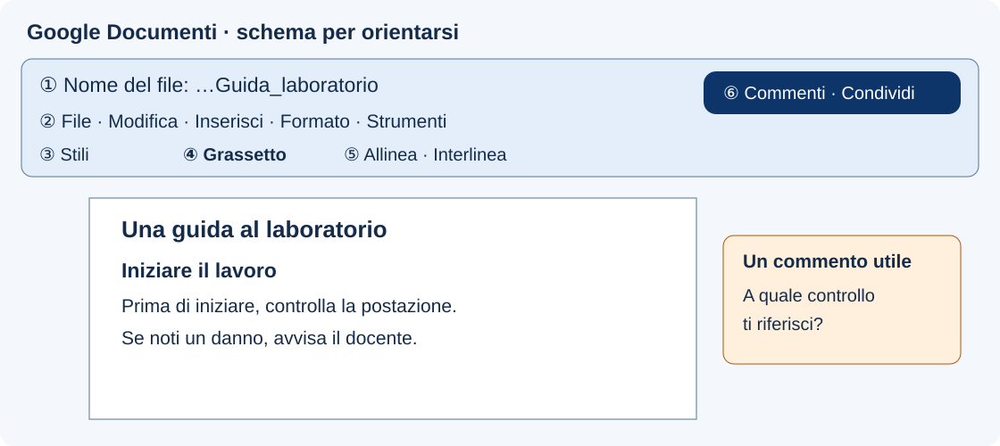

Da dove partiamo
1. Una guida già scritta può diventare più chiara
Nella lezione 5 hai costruito un documento con titolo, tre sezioni, paragrafi, elenco numerato e tabella. Ora lavorerai sullo stesso file: Cognome_, nella cartella Tecnologie informatiche.
Al termine mostrerai una guida più leggibile, un commento preciso scritto sul documento del compagno e una risposta motivata al commento ricevuto.
- Riapri il documento da Drive.
Controlla nome e cartella. Non creare una seconda guida e non rinominare il file.
- Verifica che puoi lavorare.
Se il documento è già consegnato in Classroom e non puoi modificarlo o condividerlo, avvisa il docente. Attendi che lo restituisca o ti indichi come annullare e rifare la consegna. Non cambiare i permessi per aggirare il blocco.
- Controlla la struttura.
Devono esserci il titolo e le tre sezioni della lezione 5. Se mancano parti, completa con l’aiuto del docente quelle necessarie alla revisione prima di passare alla formattazione.
Checkpoint 1: indica il titolo, un’intestazione e un paragrafo; leggi i loro stili nel selettore: Titolo, Intestazione 1, Testo normale.
Richiamo
2. Ritrova gli strumenti prima di usarli

- Nome del file: controlla di aver aperto la tua guida.
- Menu: in Formato trovi le impostazioni di testo e paragrafi; in Inserisci puoi aggiungere un commento.
- Selettore degli stili: indica la funzione del testo, per esempio Intestazione 1.
- Grassetto: mette in evidenza le parole selezionate.
- Allineamento e interlinea: regolano la disposizione dei paragrafi e lo spazio fra le righe.
- Commenti e Condividi: servono per discutere i passaggi e scegliere chi può accedere al documento.
Prima seleziona, poi agisci. Trascina sulle parole da cambiare, oppure tieni premuto Maiusc e usa le frecce. Per intervenire su un solo paragrafo, puoi posizionare il cursore al suo interno. Per più paragrafi, selezionali insieme.
Due scorciatoie utili su Windows: Ctrl + B per il grassetto; Ctrl + Z per annullare. Se una combinazione non funziona sulla tua tastiera, usa il comando nel menu.
Parole nuove
- Interlinea
- Spazio tra le righe dello stesso paragrafo.
- Spaziatura del paragrafo
- Spazio prima o dopo un paragrafo, regolato senza aggiungere righe vuote.
- Commento
- Messaggio collegato a un punto del documento: permette di fare una domanda o proporre un miglioramento senza riscrivere il testo.
- Suggerimento
- Proposta di modifica del testo che l’autore può accettare o rifiutare. Lo proverai solo nell’attività facoltativa.
Gli stili già usati danno una funzione alle parti del documento. La formattazione dei caratteri, come il grassetto, modifica l’aspetto delle parole: non sostituisce Titolo o Intestazione 1.
Osserva e spiega
Stesse parole, lettura più agevole
Prima — tutto in evidenza
Prima di consegnare, apri il documento allegato e controlla che contenga le ultime correzioni. Torna al compito e verifica lo stato Consegnato.
Dopo — due riferimenti da trovare
Prima di consegnare, apri il documento allegato e controlla che contenga le ultime correzioni. Torna al compito e verifica lo stato Consegnato.
Il testo è identico. Il grassetto limitato aiuta a ritrovare che cosa aprire e quale stato controllare; l’allineamento a sinistra dà alle righe un punto di partenza regolare. Nell’esempio “dopo” l’interlinea è più ampia. Non occorre rendere tutto grande, colorato o in grassetto.
| Se osservi… | Intervieni così | Controlla |
|---|---|---|
| Tutto il paragrafo in grassetto | Evidenzia solo poche parole utili. | Le informazioni principali si ritrovano? |
| Spazi ripetuti per centrare il titolo | Usa l’allineamento del paragrafo. | Il titolo conserva lo stile Titolo? |
| Righe vuote tra i paragrafi | Usa la spaziatura del paragrafo. | La separazione è uniforme? |
Pratica guidata
3. Migliora una sezione, poi prosegui tu
Segui la dimostrazione su Iniziare il lavoro. Poi applica gli stessi criteri agli altri due paragrafi della guida. Conserva contenuti, elenco numerato e tabella.
- Scegli che cosa evidenziare.
Seleziona una o due brevi espressioni che aiutano a trovare un’azione o un controllo. Applica Grassetto. Evita di evidenziare l’intero paragrafo.
- Regola l’allineamento.
Con il cursore nel paragrafo scegli Formato → Allinea e applica rientro → Sinistro, oppure il comando di allineamento nella barra. Mantieni a sinistra i paragrafi della guida. Se vuoi centrare il titolo, seleziona solo quel paragrafo e scegli Al centro.
- Regola le righe.
Nel paragrafo scegli Formato → Interlinea e spaziatura paragrafo → 1,5. Osserva il risultato. In questa attività usa la stessa interlinea nei tre paragrafi di spiegazione; non applicarla a tutto il documento senza distinguere le parti.
- Separa i paragrafi senza righe vuote.
Dallo stesso menu scegli Aggiungi uno spazio dopo il paragrafo. Se compare Rimuovi lo spazio dopo il paragrafo, lo spazio è già presente: non rimuoverlo. Elimina solo eventuali paragrafi vuoti aggiunti per distanziare il testo, conservando le intestazioni e i contenuti.
Checkpoint 2: mostra una modifica e spiegane l’utilità. Seleziona poi un’intestazione: deve essere ancora Intestazione 1. Controlla che i numeri dell’elenco siano automatici e che la tabella conservi errori e rimedi sulle righe corrispondenti.
Se cambi anche il testo sbagliato
Usa Annulla, controlla la selezione e ripeti su una parte più piccola. Se il selettore mostra Intestazione 1 su un paragrafo di spiegazione, riapplica Testo normale e controlla le impostazioni del paragrafo.
La novità
4. Un compagno legge e lascia un commento
Nella lezione 5 avete lavorato affiancati. Ora ciascuno apre la guida del compagno dal proprio account scolastico, con il ruolo di Commentatore: può leggere, commentare e proporre suggerimenti, ma non modificare direttamente il testo come un Editor.
- Condividi soltanto il documento.
Premi Condividi. Inserisci l’account scolastico del compagno assegnato dal docente e controlla il destinatario. Scegli Commentatore, poi Invia. Non condividere l’intera cartella.
- Controlla gli accessi.
In Condividi verifica che il compagno sia Commentatore e che l’accesso generale resti Con limitazioni. Non attivare accessi per chiunque abbia il link e non modificare l’accesso del docente. Se i permessi sono diversi o ereditati dalla cartella, chiedi aiuto prima di cambiarli.
- Apri la guida ricevuta.
Usa la notifica ricevuta oppure Condivisi con me in Drive. Controlla autore e titolo del documento. Ciascuno mantiene il proprio account e la propria password.
- Collega il commento al punto preciso.
Seleziona una frase che potrebbe essere più chiara. Scegli Inserisci → Commento, oppure Aggiungi commento. Scrivi quale dubbio hai e quale informazione aiuterebbe il lettore; premi Commenta.
Da un giudizio a un’indicazione utile
Troppo generico: “Non si capisce”.
Utilizzabile: “In «chiudi tutto» non è chiaro se devo uscire dall’account. Puoi indicare il controllo da fare prima di spegnere?”
Scrivi un commento utile sul documento del compagno. Poi invertite i ruoli: entrambi devono scrivere e ricevere un commento. Commentate il testo, senza giudizi sulla persona.
Checkpoint 3: il compagno vede il messaggio accanto alla frase selezionata; sa spiegare quale modifica viene richiesta.
Se la condivisione non è consentita
Non usare account personali o rendere pubblico il link. Mostra il problema al docente. Potete leggere affiancati: il lettore formula la proposta a voce e l’autore la registra come commento nel proprio documento, indicando che raccoglie il confronto a coppie.
5. Rispondi, correggi e verifica
- Leggi il commento ricevuto.
Riapri la tua guida. Se necessario, usa Mostra tutti i commenti. Rileggi anche il passaggio a cui il messaggio si riferisce.
- Valuta la proposta.
Se aiuta il lettore, correggi la frase. Se non è adatta, spiega il motivo. Non devi accettare ogni proposta: devi saper motivare la scelta.
- Rispondi nel commento.
Scrivi, per esempio, “Ho precisato che prima bisogna uscire dall’account; ora il controllo è esplicito”, oppure spiega perché mantieni il testo. Premi Rispondi.
- Controllate il risultato.
Il compagno rilegge la frase corretta. Lascia visibile lo scambio per il controllo del docente; usa Risolvi solo quando il docente indica di chiudere la discussione. Risolvere un commento non corregge automaticamente il testo.
Checkpoint 4: mostra il punto commentato, la tua risposta e la decisione sul testo.
Se termini prima — prova un suggerimento
Con il docente, sul documento del compagno seleziona una breve frase e scegli la modalità Suggerimento dal menu delle modalità in alto a destra, oppure il pulsante Suggerisci modifiche accanto alla selezione. Proponi una sola correzione utile. Il Commentatore può farlo: la proposta resta da approvare. L’autore la legge e sceglie Accetta o Rifiuta, spiegandone il motivo. Un commento discute il testo; un suggerimento propone una sostituzione concreta. Non cambiate il ruolo in Editor per svolgere questa prova.
Prima della consegna
6. Mostra che il lavoro è completo
- È lo stesso documento della lezione 5, nella cartella corretta.
- Titolo e tre intestazioni mantengono gli stili; elenco numerato e tabella sono integri.
- I tre paragrafi sono allineati a sinistra, con interlinea 1,5 e spazio dopo il paragrafo; il grassetto evidenzia poche espressioni utili.
- Hai scritto un commento preciso sulla guida del compagno e risposto al commento ricevuto.
- Sai mostrare una correzione o motivare la scelta di mantenere il testo.
- Oltre al docente, ha accesso soltanto il compagno assegnato come Commentatore; l’accesso generale è Con limitazioni.
- Controlla il salvataggio.
Vicino al nome del file verifica che le modifiche risultino salvate in Drive. Se compare un errore o manca la connessione, lascia aperto il documento e avvisa il docente.
- Segui il compito indicato dal docente.
In Classroom apri Lavori del corso → compito → Visualizza istruzioni. Se il documento non è già allegato, scegli Aggiungi o crea → Google Drive e seleziona la guida esistente. Apri l’allegato e controlla che sia il file aggiornato; premi Consegna e conferma. Verifica lo stato Consegnato. Se il docente ha riaperto il compito precedente, riconsegna lì secondo le sue indicazioni.
- Concludi il lavoro.
In questa attività consegni il Documento Google, che conserva commenti e risposte: non serve un PDF. Mantieni la condivisione con il compagno per il controllo del docente; al termine della revisione rimuovila quando il docente lo indica, senza cambiare gli altri accessi. Esci dagli account, spegni e riconsegna il portatile secondo la procedura del laboratorio.
Prima di chiudere: che differenza c’è tra interlinea e spaziatura del paragrafo? Perché il compagno ha il ruolo Commentatore? Che cosa rende utile il tuo commento?
Per approfondire
Lavorare senza connessione
La modalità offline permette di lavorare su file predisposti anche senza rete e sincronizzarli dopo. Non è necessaria per questa lezione. Sui portatili condivisi la configurazione e la gestione dei dati locali spettano al docente e all’organizzazione scolastica: non attivarla e non installare estensioni durante l’attività. Se la rete si interrompe, avvisa il docente e non chiudere un documento con modifiche non salvate.
Guide dei comandi
Riferimenti ufficiali Google per ritrovare i passaggi: formattazione e spaziatura, scorciatoie da tastiera, ruoli e condivisione, commenti e risposte, suggerimenti, consegna in Classroom.
Le istruzioni si riferiscono alla versione per computer in italiano. Alcune etichette possono variare: se non trovi il comando, chiedi di individuarlo per nome.